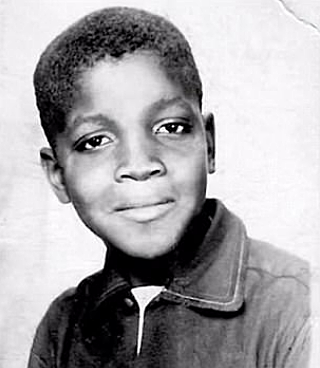

This page is about Marsha P. Johnson
Marsha P. Johnson was an African American transgender woman and revolutionary LGBTQ rights activist. She is famous for being an instigator in the Stonewall riots.
Who was Marsha?
She was an African American transgender woman who was an lifelong LGBTQ+ rights activist and an advocate for trans people of color. Perhaps, Marsha P. Johnson was famous for spearheading in Stonewall uprising in 1969 with Sylvia Rivera, she later established the Street Transvestite (now Transgender) Action Revolutionaries (STAR), which dedicated to helping homeless trans youth. Unfortunately, Marsha was found dead on July 6, 1992 at the age of 46. Her tragic death was a lost to all trans people and the world, yet her legacies remain, inspiring everyone of us.
Marshas' early life
 https://www.timetoast.com/timelines/marsha-p-johnsonFamous Contributions
On June 28, 1969, at the Stonewall Inn on Christopher Street, things turned violent after a few LGBTQ people were arrested on questionable charges. The LGBTQ community was irritated being targeted by the police. These public arrests incited rioting that spilled over into the neighboring streets and lasted several days. These events have been described as a “riot,” a “rebellion,” a “protest,” and an “uprising.” Whatever the label, this was undoubtedly a historical moment in LGBT history. And Marsha P. Johnson was one of the most significant figure in Stonewall Uprising.
Marsha p. Johnson and her friend Sylvia Rivera co-founded the Street Transvestite Action Revolutionaries (STAR), which in their commitment to helping homeless transgender youth. STAR provided shelter to homeless LGBTQ people in New York City, Chicago, California and England for a few years in the early 1970s but, unfortunately, eventually disbanded.
Famous quote from Marsha
“How many years has it taken people to realize that we are all brothers and sisters and human beings in the human race?”
“No pride for some of us without liberation for all of us.”
“They call me a legend in my own time, because there were so many queens gone that I’m one of the few queens left from the ’70s and the ’80s.”
For more quotes from Marsha P. Johnson click here
Want to learn more about Marsha P. Johnson?
Documentary: Pay It No Mind: Marsha P. Johnson(2012)
Documentary: The Death and Life of Marsha P. Johnson(2017)
Documentary: Happy Birthday, Marsha!(2017)